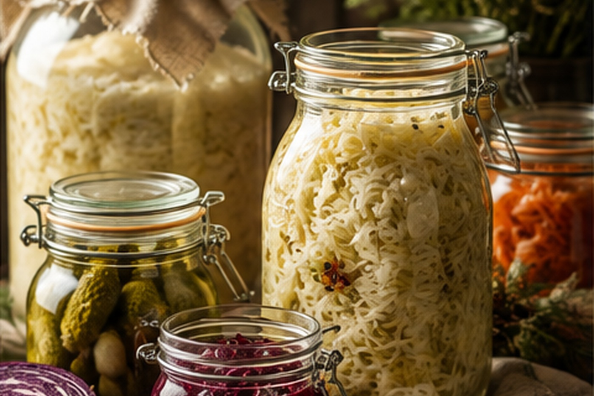
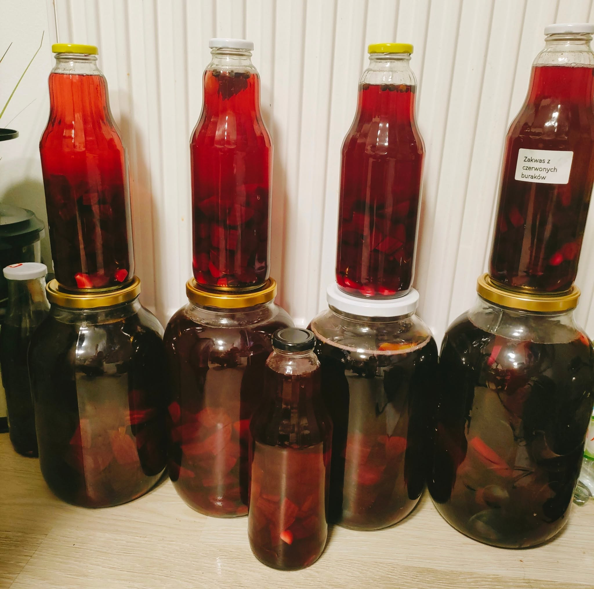
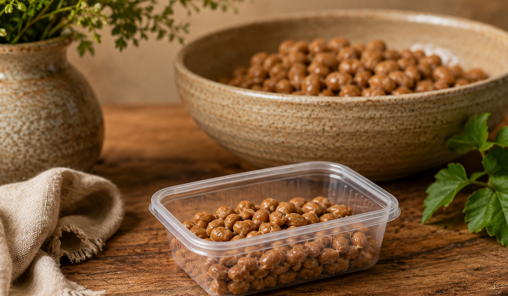
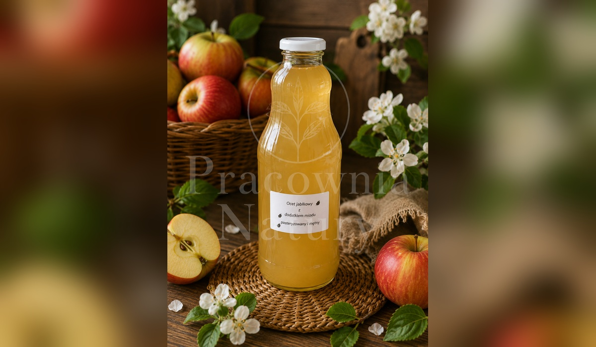
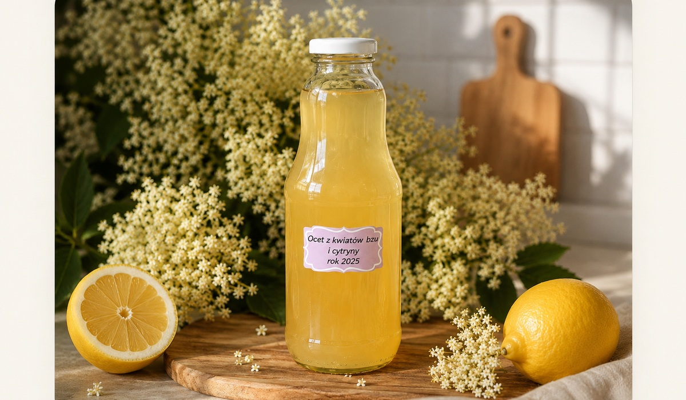
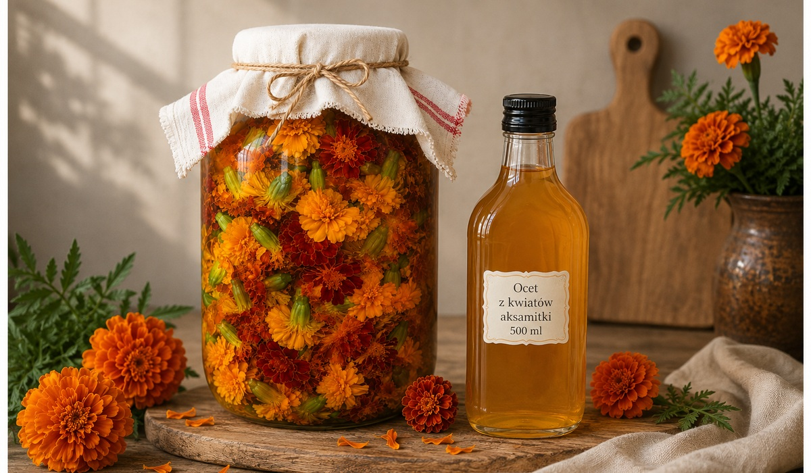

← Powrót do kategorii
Nasze wyroby
Fermenty i zakwasy
Zakwas Enzymy Bołotowa na koziej serwatce, zakwas buraczany, japońskie natto i octy z kwiatów fermentujemy sami, tradycyjną metodą i w małych partiach. Wybierz wyrób, sprawdź opis i cenę, a następnie dodaj go do koszyka.


wyrób Pracowni
Zakwas buraczany
📖 Opis produktu

wyrób Pracowni
Natto (nattokinaza)
📖 Opis produktu

wyrób Pracowni
Ocet jabłkowy
📖 Opis produktu

wyrób Pracowni
Ocet z kwiatów bzu czarnego i cytryny
📖 Opis produktu

wyrób Pracowni